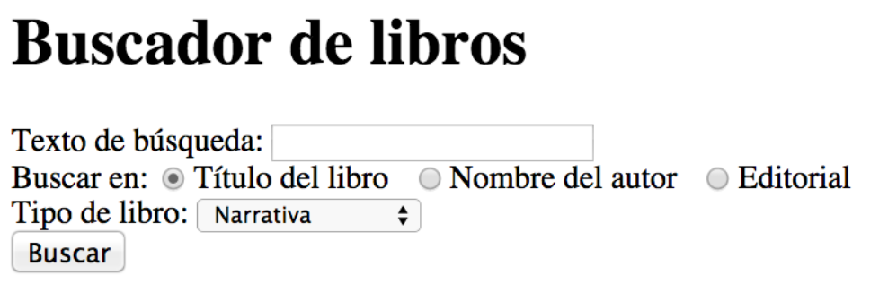

El medio principal que tiene el cliente (navegador) para poder enviar información al servidor son los formularios, o mediante enlaces que indican la carga de una determinada página. De cualquiera de las dos formas, se genera una petición al servidor, utilizando el protocolo HTTP, en la que se envían los llamados datos de formulario, información adicional que normalmente son los datos que se rellenan en el formulario, de ahí su nombre).
1. Las variables $_GET, $_POST y $_REQUEST
Para recoger los datos que envían los clientes, tenemos predefinidas diferentes variables en PHP. Por ejemplo, si los datos se envían por método GET (cuando vienen de un enlace, o de un formulario con method="get"), podemos recogerlos en una variable llamada $_GET. Por el contrario, si se envían por método POST (para formularios con method="post"), podremos obtenerlos con la variable $_POST. Y tenemos una tercera variable, llamada $_REQUEST, que nos servirá para tomar los datos de cualquiera de estos dos métodos (y de otros más que no veremos aquí). Así, lo más habitual será utilizar esta tercera variable, a no ser que queramos restringir la recepción de ciertos datos sólo a métodos GET o POST.
Cualquiera de estas tres variables es un array asociativo, es decir, un conjunto de datos enviados a los que se accede por el nombre de cada campo. Para acceder a un dato concreto de ese conjunto, en general, usaremos los corchetes y dentro, entre comillas, el mismo nombre que hayamos puesto en el atributo name del formulario que lo envió. Por ejemplo, si tenemos un formulario como este:
<form action="mipagina.php" method="post">
<label for="login">Login:</label>
<input type="text" name="login" id="login" size="20"><br>
<label for="email">E-mail:</label>
<input type="text" name="email" id="email" size="50"><br>
<input type="submit" value="Enviar" />
</form>Al enviarlo, en la página mipagina.php podríamos acceder al login que haya puesto el usuario cliente mediante:
$loginUsuario = $_REQUEST["login"];o también así:
$loginUsuario = $_POST["login"];También podemos, antes de acceder a algún dato y dar por supuesto que se ha enviado, comprobar con isset si realmente ese dato existe dentro de la variable $_REQUEST (si no existe es porque no se ha enviado dicho dato):
if (isset($_REQUEST['login']))
...Este mecanismo de obtener datos nos servirá para casi todos los campos de formularios, salvo aquellos que puedan devolver múltiples valores, como las listas con selección múltiple, caso que veremos a continuación.
Crea una carpeta llamada 04_formularios donde colocar los ejercicios de esta sesión. Dentro, crea una subcarpeta llamada 01_libros con dos páginas PHP:
- form_libros.php con un formulario como el que se muestra a continuación. En la lista desplegable deben aparecer los géneros Narrativa, Libros de texto y Guías y mapas.
- El formulario debe enviarse a una página llamada result_libros.php que muestre un resumen de lo que se ha enviado por el formulario, y tenga un enlace para volver al formulario anterior

Crea una subcarpeta llamada 02_departamentos en tu carpeta de ejercicios. Dentro, crea estas dos páginas PHP:
- form_dep.php con un formulario que mostrará una lista desplegable con 4 nombres de departamento: INFORMÁTICA, LENGUA, MATEMÁTICAS e INGLÉS.
- Debajo crea una lista de seleccióm multiple con los mismos datos de antes y la llamas departamentos[]
- El formulario se enviará a la página presupuesto.php que deberá recoger el departamento indicado por el usuario y le indicará el presupuesto asignado: INFORMÁTICA = 500 euros, LENGUA = 300 euros, MATEMÁTICAS = 300 euros, INGLÉS: 400 euros
- En el caso de la seleccion múltiple mostrara la lista de departamentos y la suma del presupuesto asignado INFORMÁTICA, LENGUA, y MATEMÁTICAS = 1100 euros
2. Algunos envíos especiales
En esta sección veremos cómo recoger datos que se envían de algún modo especial, como campos múltiples, ficheros, o datos a través de enlaces.
2.1 Recogida de campos múltiples
En el caso de campos con múltiples valores enviados (por ejemplo, una lista de selección múltiple), el campo del formulario tendrá este aspecto:
<form...>
...
<select multiple name="personas[]" size="5">
<option value="Juan Rodríguez">Juan Rodríguez</option>
...
</select>
...Al enviarse, recogeremos los elementos enviados en una variable que podremos recorrer con un foreach o una estructura similar:
$personas = $_REQUEST['personas'];
foreach ($personas as $persona)
{
...
}
...2.2. Envío de datos mediante enlaces
Hemos dicho que a través de los enlaces también podemos enviar datos al servidor. Normalmente, los enlaces no envían nada más que la página o recurso que queremos ver (por ejemplo, http://www.google.es). Pero también podemos añadir, al final de la URL, nombres de parámetros y sus respectivos valores, separados por el símbolo &, como si los enviáramos desde un formulario. Así, si quisiéramos “simular” el envío del formulario anterior para un usuario con login “usu1” y e-mail “usu1@gmail.com”, pondríamos un enlace así:
<a href="mipagina.php?login=usu1&email=usu1@gmail.com">
Enviar datos
</a>Estos datos podremos recogerlos a través de las variables $_GET o $_REQUEST (el método POST no se emplea en los enlaces):
$mailUsuario = $_GET["email"];Copia el ejercicio anterior a una carpeta llamada 03_form_depto Modifica el ejercicio anterior, creando una página más llamada form_dep2.php que, en lugar de un formulario con la lista desplegable, muestre al usuario 4 enlaces con los 4 nombres de departamento. Los enlaces deben enviar (todos) a la página presupuesto.php, indicando cuál es el departamento seleccionado, para que obtengamos el mismo resultado que con el formulario anterior.
2.3. Envíos a la propia página
Es habitual también encontrarnos con formularios cuyo action apunta a la misma página del formulario. Después, con código PHP (con instrucciones if..else), podemos distinguir si queremos cargar una página normal, o si hemos recibido datos del formulario y hay que procesarlos.
En cualquier caso, para poder hacer que un formulario se envíe a su propia página, podemos directamente poner el nombre de la misma página en el action (por ejemplo, action="mipagina.php"), pero si más adelante decidimos cambiar el nombre del archivo, corremos el riesgo de olvidarnos cambiar el formulario también. Para evitar este problema, contamos en PHP con una variable llamada $_SERVER['PHP_SELF'], con lo que bastaría con poner esa variable en el action del formulario :
<form action="<?php echo $_SERVER['PHP_SELF']; ?>" method="post">
...
</form>Crea una carpeta y la llamas 04_presupuesto, crea dentro una página llamada 04_presupuesto.php que tenga el formulario con la lista desplegable de departamentos, y se llame a sí misma para calcular el presupuesto según lo que se envíe por su propio formulario.
2.4. Subir ficheros al servidor
Otra forma de comunicación entre cliente y servidor es la subida de archivos del cliente al servidor como parte de un formulario. Para ello, añadimos al formulario un campo input de tipo file. Además, debemos añadir a la etiqueta form el atributo enctype, con el valor multipart/form-data para hacer saber al navegador y al servidor que en ese formulario se van a enviar los datos de un archivo.
<form action="pagina.php" method="post" enctype="multipart/form-data">
...
<input type="file" name="fichero" />El tamaño máximo permitido del fichero a subir se puede establecer en el archivo php.ini (propiedad upload_max_filesize), o añadiendo un campo oculto (type="hidden") en el formulario, con nombre MAX_FILE_SIZE y el máximo tamaño permitido, en bytes.
<form action="pagina.php" method="post" enctype="multipart/form-data">
<input type="hidden" name="MAX_FILE_SIZE" value="20000" />
<input type="file" name="fichero" />Una vez recibido el formulario por el servidor, el fichero se almacena en una carpeta temporal, y debemos moverlo a su ubicación definitiva con la función move_uploaded_file. La variable global $_FILES contiene toda la información de los archivos que se han subido con el formulario. Un típico código de subida podría ser:
if (is_uploaded_file ($_FILES['fichero']['tmp_name']))
{
$nombreDirectorio = "ficheros/";
$idUnico = time();
$nombreFichero = $idUnico . "-" . $_FILES['fichero']['name'];
move_uploaded_file ($_FILES['fichero']['tmp_name'], $nombreDirectorio .
$nombreFichero);
} else
print ("No se ha podido subir el fichero\n");Además de la clave name, la variable $_FILES también permite localizar otra información del fichero subido, como el tipo de archivo (clave type), o el tamaño (clave size). En el código, la variable $idUnico se utiliza para no sobreescribir archivos con el mismo nombre, sino ponerles una marca temporal como prefijo para almacenar un histórico. Pero podría evitarse la variable y sobreescribir archivos que se llamen igual:
if (is_uploaded_file ($_FILES['fichero']['tmp_name']))
{
$nombreDirectorio = "ficheros/";
move_uploaded_file ($_FILES['fichero']['tmp_name'], $nombreDirectorio .
$_FILES['fichero']['name']);
} else
print ("No se ha podido subir el fichero\n");Crea en tu carpeta de ejercicios una subcarpeta llamada 05_ficheros. Dentro, crea un formulario llamado form_imagen.php que permita seleccionar un archivo y subirlo a una página llamada subir_imagen.php. Además del campo para la imagen, añadiremos un campo de texto para indicar el título de la imagen. En la página subir_imagen.php comprobaremos que el fichero subido es una imagen, y si lo es, lo copiaremos a una subcarpeta imgs y mostraremos la imagen subida en la misma página subir_imagen.php, junto con su título.